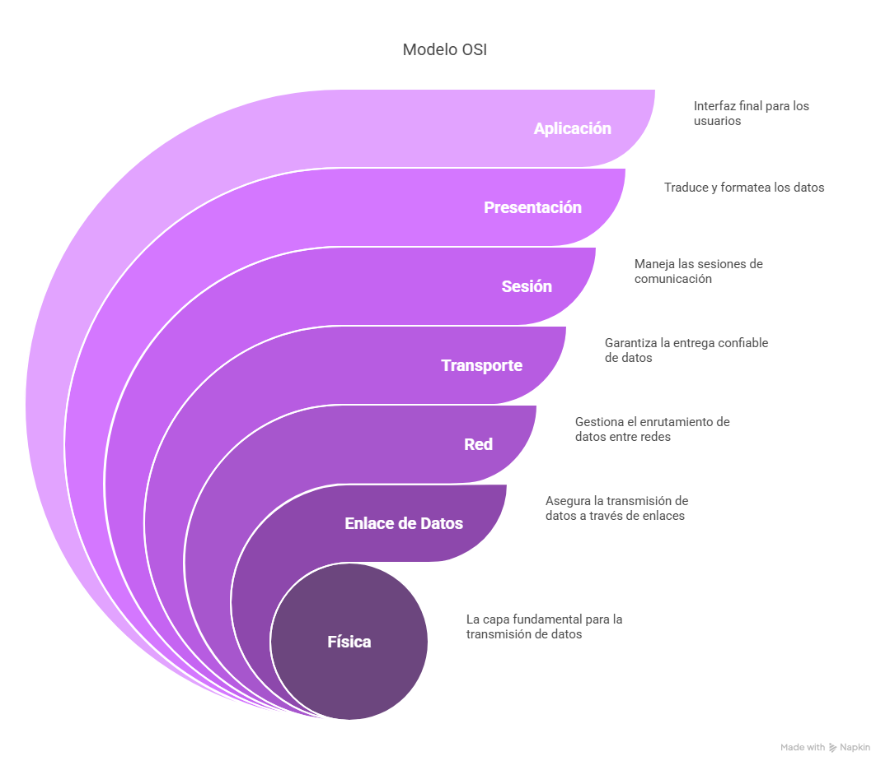

üìú Introducci√≥n
Bienvenido, Rubén. Estás por sumergirte en una aventura narrativa y técnica para demostrar mis conocimientos en redes.
üîç Parte I: Conceptos y Teor√≠a
Este ejercicio se refiere al modelo OSI. Cada franja representa una de sus capas:
Introducción:El mural de las siete capas que se encuentra en la sala principal del templo simboliza el Modelo OSI (Interconexión de Sistemas Abiertos), una estructura conceptual que describe el proceso mediante el cual los datos se trasladan desde una aplicación en un dispositivo hasta otra aplicación en un dispositivo remoto. Esto lo deducimos del enunciado, que menciona que el mural está compuesto por siete franjas horizontales, y curiosamente, cada una representa un nivel distinto dentro de un proceso de comunicación, lo que coincide con las siete capas que transforman y procesan la información. 
- Capa 7 - Aplicación: Esta capa es la interfaz final para los usuarios. Aquí es donde se encuentran las aplicaciones que utilizan los usuarios, como navegadores web y clientes de correo electrónico.
- Capa 6 - Presentación: La capa de presentación traduce y formatea los datos para que sean comprensibles para la aplicación. Se encarga de la conversión de datos, como la codificación de imágenes o textos.
- Capa 5 - Sesión: La capa de sesión maneja las sesiones de comunicación entre dispositivos. Se asegura de que la comunicación entre aplicaciones continúe sin interrupciones, estableciendo, manteniendo y cerrando las sesiones.
- Capa 4 - Transporte: La capa de transporte garantiza la entrega confiable de datos. Se encarga de dividir los datos en paquetes y asegurar que lleguen correctamente al destino, utilizando protocolos como TCP y UDP.
- Capa 3 - Red: La capa de red se encarga de gestionar el enrutamiento de los datos entre redes. Los routers operan en esta capa para dirigir los datos a su destino final.
- Capa 2 - Enlace de Datos: La capa de enlace de datos asegura la transmisión de datos a través de enlaces físicos. Se encarga de la corrección de errores y el direccionamiento físico utilizando direcciones MAC.
- Capa 1 - Física: Esta es la capa fundamental para la transmisión de datos. Se ocupa de la transmisión de bits a través de un medio físico, como cables, fibras ópticas o señales inalámbricas.
Interpretación del Ejercicio: Los Dos Pergaminos del Mensajero
El enunciado describe dos rituales: el Mensajero Confiable y el Mensajero Veloz. Cada uno representa diferentes enfoques de transmisión de datos, y se pide que los interpretes como protocolos de comunicación en redes modernas.
1. Ritual del Mensajero Confiable:
Protocolo equivalente: TCP (Transmission Control Protocol)
El protocolo TCP es confiable y garantiza que los mensajes se entreguen correctamente, de manera similar al ritual del mensajero confiable que espera una confirmación.
- Características clave:
- Establecimiento de conexión (similar a los "tres pasos de saludo").
- Confirmación de recepción (similar a la confirmación de entrega).
- Reintento de envío si no se recibe la confirmación (retransmisiones).
- Ventajas de TCP:
- Alta fiabilidad, asegurando que los datos lleguen correctamente.
- Garantiza el orden de los paquetes.
- Desventajas de TCP:
- Mayor latencia debido a la confirmación y retransmisión.
- Mayor consumo de ancho de banda debido al control de errores.
2. Ritual del Mensajero Veloz:
Protocolo equivalente: UDP (User Datagram Protocol)
UDP es un protocolo más rápido pero menos confiable. No garantiza la entrega ni el orden de los paquetes, similar al mensajero veloz que entrega los mensajes sin esperar confirmación.
- Características clave:
- Envío sin confirmación (como el mensajero veloz que no espera una respuesta).
- Menor sobrecarga de procesamiento (más rápido).
- Ventajas de UDP:
- Baja latencia, más rápido que TCP.
- Menor consumo de ancho de banda, ya que no hay retransmisiones ni confirmaciones.
- Desventajas de UDP:
- Menos confiabilidad, los datos pueden perderse o llegar fuera de orden.
- No tiene control de flujo ni control de errores.
Avanzando por un pasillo, encuentras una losa de piedra con inscripciones que parecen ser direcciones numéricas. Una inscripción cuenta: "Nuestro reino digital tenía la dirección sagrada 192.168.50.0. Los cuatro grandes gremios de la ciudad exigían su propio distrito en la red, todos de igual tamaño". Junto a esto, ves un diagrama borroso de algo que parecen ser subredes emanando de la dirección principal, cada una con su propio identificador.
Pregunta: Descifra el enigma de la losa. Si la antigua red usaba la dirección 192.168.50.0 como base y necesitaba dividirse en 4 subredes de igual tamaño, ¿qué máscara de subred habrían utilizado los antiguos para lograrlo? ¿Cuántas direcciones de host (utilizables) tendría cada subred resultante? Explica brevemente tu razonamiento al calcular la máscara.
Tras descifrar el enigma descubrimos lo siguiente:
Dirección de red principal ➞ 192.168.50.0/24, lo que indica que la red tiene una máscara de subred de 255.255.255.0, la cual permite tener hasta 254 direcciones de host en total.
Como nos señala el enunciado, necesitamos dividir esta red en cuatro subredes de igual tamaño. Esto significa que necesitamos utilizar bits del campo de host para generar más subredes.
Cálculo de la máscara de subred:
La red original tiene una máscara /24, es decir, 24 bits para la red.
Para crear las 4 subredes, necesitamos 2 bits adicionales.
22 = 4 subredes.
Al tomar 2 bits del campo de host, la nueva máscara será /26, es decir:
Máscara de subred: 255.255.255.192
Cálculo de direcciones de host por subred:
La máscara /26 deja 6 bits para los hosts.
32 - 26 = 6 bits.
El número total de direcciones de host posibles:
26 = 64 direcciones.
Sin embargo, 2 direcciones de cada subred se utilizan para la dirección de red y la dirección de broadcast, por lo que las direcciones de host utilizables serán:
64 - 2 = 62 direcciones utilizables por subred.
Subredes resultantes:
| Subred | Dirección de Red | Rango de Hosts | Dirección de Broadcast | Número de Hosts Utilizables |
|---|---|---|---|---|
| Subred 1 | 192.168.50.0/26 | 192.168.50.1 a 192.168.50.62 | 192.168.50.63 | 62 |
| Subred 2 | 192.168.50.64/26 | 192.168.50.65 a 192.168.50.126 | 192.168.50.127 | 62 |
| Subred 3 | 192.168.50.128/26 | 192.168.50.129 a 192.168.50.190 | 192.168.50.191 | 62 |
| Subred 4 | 192.168.50.192/26 | 192.168.50.193 a 192.168.50.254 | 192.168.50.255 | 62 |
Explicación de términos:
- Dirección de Red: La primera dirección de cada subred, que no se puede asignar a un host.
- Rango de Hosts: El rango de direcciones utilizables para asignar a los dispositivos dentro de cada subred.
- Dirección de Broadcast: La última dirección de cada subred, usada para enviar mensajes a todos los dispositivos de esa subred.
- Número de Hosts Utilizables: El total de direcciones que pueden asignarse a los dispositivos dentro de la subred, excluyendo la dirección de red y la de broadcast.
Diagrama de las Subredes:
El tótem representa una tabla de enrutamiento. Las flechas fijas son rutas estáticas; las móviles, rutas dinámicas aprendidas por protocolos como OSPF o RIP.
Este guardián simboliza el NAT (Traducción de Direcciones de Red). Permite que varios dispositivos compartan una sola IP pública, ocultando sus direcciones privadas. Beneficios: seguridad y ahorro de direcciones públicas.
üõ† Parte II: Práctica con Cisco Packet Tracer
Documentación Técnica: Reconstrucción de Redes en las Ciudades Perdidas
Introducción: En este ejercicio, restauramos la conexión entre dos ciudades separadas por un desierto, utilizando Cisco Packet Tracer. Configuramos una red que conecta ambas ciudades a través de un enlace WAN, creando una topología robusta usando routers, switches, dispositivos finales y una nube WAN con Frame Relay.
Topología de la Red:
- Router A (Ciudad A) y Router B (Ciudad B) conectados por un enlace WAN
- Switches en cada ciudad para gestionar las redes LAN
- Dispositivos finales (laptops, tablets, PCs) conectados a los switches
- Cloud PT simulando una nube con conexión Frame Relay
Equipos y Enlaces Principales:
- Router A (Cisco 1841):
- FastEthernet0/0: 192.168.10.1/24 (LAN Ciudad A)
- Serial0/1/0: 192.168.30.1/30 (WAN a Router B)
- Ruta estática:
ip route 192.168.20.0 255.255.255.0 192.168.30.2
- Router B (Cisco 1841):
- FastEthernet0/0: 192.168.20.1/24 (LAN Ciudad B)
- Serial0/1/0: 192.168.30.2/30 (WAN a Router A)
- Ruta estática:
ip route 192.168.10.0 255.255.255.0 192.168.30.1
- Cloud PT (Nube WAN): Frame Relay entre ambos routers con DLCIs 100 y 200
Configuración de la Nube WAN: Se configuró Frame Relay con los siguientes comandos:
interface Serial0/1/0 encapsulation frame-relay
Asignación de DLCI:
- Router A: DLCI 100
- Router B: DLCI 200
Configuración de Switches: Cada ciudad tiene un switch configurado con una VLAN:
- Ciudad A: VLAN 10
- Ciudad B: VLAN 20
Las interfaces del switch fueron asignadas como access y vinculadas a sus respectivas VLANs.
Configuración de Dispositivos Finales:
- Ciudad A:
- Laptop A: 192.168.10.13
- Tablet A: 192.168.10.14
- PC A1: 192.168.10.10
- Ciudad B:
- Laptop B: 192.168.20.13
- Tablet B: 192.168.20.14
- PC B4: 192.168.20.10
Capturas de Pantalla:
Ping desde PC A a PC B:

Ping entre Tablet de Ciudad B y Laptop de Ciudad A:
Conclusión: Tras la implementación de la red completa con routers, switches, VLANs y Frame Relay, la conectividad entre Ciudad A y Ciudad B quedó restaurada. La configuración estática y la simulación de WAN fueron efectivas.
Documentación Técnica: Restauración de las Redes de la Ciudad Perdida
Introducción: En este ejercicio, como parte de la misión para restaurar las redes de una antigua ciudad, se configuró una infraestructura de red segmentada utilizando VLANs y un router-on-a-stick. El objetivo era devolver la comunicación entre las diferentes facciones de la ciudad, que estaban aisladas en VLANs distintas. A través de esta reconstrucción, se restableció la conexión entre los gremios de Arquitectos, Escribas y Magos, permitiendo la comunicación entre ellos a través de un router Cisco 1941 y un switch Cisco 2960.
Equipos Utilizados:
- Router Cisco 1941
- Switch Cisco 2960
- PCs Genéricos asignados a diferentes VLANs
VLANs y Subredes:
- VLAN 10 (Arquitectos): 192.168.10.0/24
- VLAN 20 (Escribas): 192.168.20.0/24
- VLAN 30 (Magos): 192.168.30.0/24
Direcciones IP:
- Arquitectos: PC1 (.2), PC2 (.3), PC3 (.4)
- Escribas: PC4 (.2), PC5 (.3), PC6 (.4)
- Magos: PC7 (.2), PC8 (.3)
Router - Subinterfaces:
interface Fa0/0.10
encapsulation dot1Q 10
ip address 192.168.10.1 255.255.255.0
no shutdown
interface Fa0/0.20
encapsulation dot1Q 20
ip address 192.168.20.1 255.255.255.0
no shutdown
interface Fa0/0.30
encapsulation dot1Q 30
ip address 192.168.30.1 255.255.255.0
no shutdown
Switch - Configuración:
vlan 10
name Arquitectos
exit
vlan 20
name Escribas
exit
vlan 30
name Magos
exit
interface range fa0/2 - 4
switchport mode access
switchport access vlan 10
exit
interface range fa0/5 - 7
switchport mode access
switchport access vlan 20
exit
interface range fa0/8 - 9
switchport mode access
switchport access vlan 30
exit
interface fa0/1
switchport mode trunk
exit
Verificación de Conectividad: Se realizaron pings exitosos entre PCs de la misma VLAN y entre VLANs distintas, confirmando la funcionalidad del enrutamiento inter-VLAN.
Capturas de Pantalla:
Ping en la misma VLAN (Arquitectos)
Ping entre VLANes distintas

Conclusión: La configuración de Router-on-a-Stick fue exitosa. La ciudad digital ha sido restaurada, y los gremios se comunican sin interferencias.
üßæ Recomendaciones y Entrega
Recuerda entregar tu repositorio en GitHub con los archivos .pkt, un README bien documentado y toda la narrativa técnica.